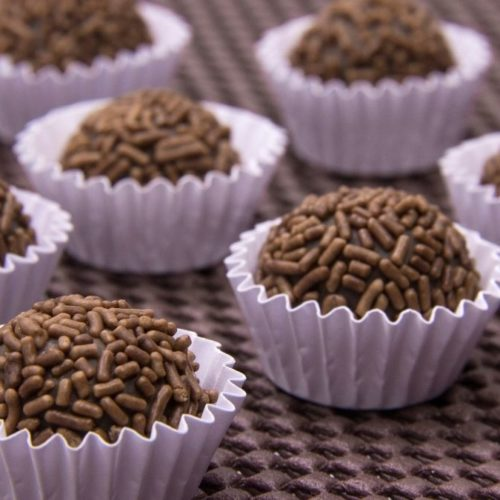

Brigadeiro

A great Brazilian sweet that is like a bonbon and extremely scrumptious and delicious!
Brigadeiro is a great type of sweet that is loved here in Brazil! Try it!
You can make it in the microwave too, just remember to stir every minute.
Ingredients
- 1 (14 ounce) can sweetened condensed milk
- 2 tablespoons powdered cocoa
- 2 tablespoons unsalted butter
- 1 cup chocolate sprinkles, or as needed
Steps
- Combine condensed milk, cocoa, and 2 tablespoons butter in a saucepan and bring to a boil
- Reduce heat to low and cook, stirring constantly, until brigadeiro mixture thickens
- Pulls away from the bottom and sides when the pan is tilted, 10 to 15 minutes
- Remove from heat and let brigadeiro mixture cool to room temperature, about 1 hour
- Scoop teaspoonfuls of the brigadeiro mixture and roll into balls with greased hands
- Spread chocolate sprinkles on a shallow plate. Dip and roll brigadeiros in sprinkles
Return to main page